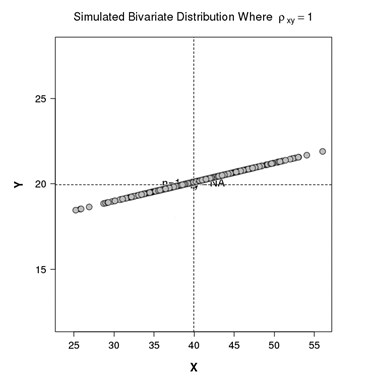

1 통계는 왜 어려울까?
1.1 문과 출신의 평생 난제: 통계
1.1.1 통계는 왜 어려운 것일까?
대부분의 사람들은 통계를 어려워합니다. 특히, 인문계열 출신들은 더욱 그렇습니다. 이 글을 쓰고있는 저도 통계가 어렵습니다. 물론, 통계가 어려운 이유는다양 합니다. 그러나, 기초 통계수준에서 많은 사람들이 어려움을 겪는 주된 이유는 사실이 책을 읽고있는 여러분들에게 있지않다는 것이제 생각입니다. 제가 처음 통계를 마주한 것이고등학교 시절정석이라는 수학참고서였습니다. 아마 대부분비슷할 것이라는 생각이 듭니다. 고등학교 당시에 배운 통계는 무조건 문제를 풀어서 정답을 맞춰야만 하는 것일 뿐이었고 수능에 나오지않았으면 하는 그런 대상이었습니다. 대학에 가서도 경영 통계나 일반통계강의를 들으면 도통 알 수없는 말들로 가득했고 여전히 시험기간이 되면 문제를 풀고정답을 찾기에 그저 바쁘기만 했습니다.
1.1.2 통계가 어려운 첫 번째 이유
여태 우리에게 통계란 그저 정답을 찾아야만 하는 문제였고, 그래서 어렵기만 했습니다. 정답을 찾아야 한다는 압박감이 여전히 우리의 뇌리에 자리 잡고 있으니 통계가 어렵게 느껴지는 것이 이상한 일은 아닙니다. 저도 가르치는 직업을 가진 사람으로서 과거의 통계 강의가 너무 어렵기만 했던 것은 아니었나 생각해봅니다. 물론 과거의 제 선생님들은 모두 훌륭하신 분들이었지만 저도 가르치면서 보니 아는 것과 가르치는 것은 많은 차이가 난다는 것을 깨닫게 되었습니다. 저도 선생으로서 첫 몇 년 동안 많은 고민과 어려움을 마주하면서 어떻게 통계를 가르쳐야 하나 고민이 많았습니다. 나름 쉽게 설명하고 있다고 생각했지만, 학생들은 여전히 어려워했고 다만 필기하고 암기하기에 바빴습니다. 문제는 통계가 암기과목이 아니라는 점이 함정이었습니다. 그래서 숫자와 기호 그리고 수식, 공식 등은 가급적 자제하고 말과 논리로서 통계를 가르치려 노력하다 보니 여기까지 오게 되었습니다.
저는 통계 전문가가 아닙니다. 더구나 저는 통계 전공자도 아닙니다. 학부, 석사와 박사도 통계 전공을 한 사람이 아닙니다. 그러나 저는 오히려 비전공자로서 통알못(통계를 알지 못하는 분들)에게 어떻게 해야 더 쉽게 설명할 수 있을지 잘 알고 있다고 생각합니다. 인문사회계열의 전공자이면서 문과돌이로 살아온 사람들은 수학에도 약하지만 수학 공식을 보는 것 자체가 스트레스입니다. 제 생각에 통계가 어려웠던 이유는 통계 교육이 잘못 되어 있었기 때문이라고 봅니다. 절대 여러분들이 부족하거나 이해를 못하는 것이 아니라는 것을 저는 먼저 이야기하고 싶습니다. 통계를 정답을 찾아 풀어야만 하는 수학문제로 배워온 우리는 이제 다른 접근을 해야 합니다.
1.1.3 통계가 어려운 두 번째 이유
우리가 처음 외국어를 공부할 때를 떠올려 봅시다. 대부분의 경우 그 언어의 문자와 발음부터 시작해서 단어와 어순 그리고 문법을 공부하면서 차근차근 알아가게 됩니다. 외국어는 어렵긴 하지만 아무리 들어도 이해가 안 되는 통계와는 느낌이 많이 다릅니다. 그런데 저는 통계도 일종의 외국어라고 생각합니다. 문제는 외국어인 통계를 외국어처럼 가르치지 않는다는 것이 문제라고 생각합니다. 통계에서 사용되는 단어와 정의 그리고 의미 등은 애초에 우리의 일상생활과는 동떨어진 남의 나라 혹은 남의 행성 이야기입니다. 어쩌면 통계는 외국어 보다 외계어에 더 가까울 수도 있습니다. 왜냐하면 통계에서 이야기하는 논리의 흐름은 우리의 일상적인 생각의 흐름과는 완전히 다르기 때문입니다. 이제 한 에피소드를 살펴보겠습니다.
1.1.4 안유의 주임의 보고서
세컨마트에 다니는 회사원 3년차 안유의 주임은 금년 12월 매출이 지난 10년간의 12월 평균매출 보다 1,000만원이나 증가했다는 사실을 월간 매출 보고서 작성 중 발견했습니다. 이번 12월은 안주임이 새로 계획한 판매 전략을 시험했던 첫 달 이었고, 이에 안유의 주임은 본인의 새로운 판매 전략이 12월 매출을 1000만원 증가시켰다고 확신하고 보고서를 작성하였습니다. 안주임은 보고서를 서둘러 출력하여 정통해 부장에게 보고하였습니다.
안주임: 부장님! 신규 판매 전략이 성공입니다! 12월 매출이 1000만원이나 올랐습니다! 정부장: (곁눈질로 보고서를 잠시 보더니) 이보게!! 박경우과장!! 박과장: 네, 부장님. 정부장: 자네가 이 친구 기본적인 통계부터 좀 가르쳐야겠는데. 안주임: 네??? 제 보고서에 무슨 문제가 있나요?
저도 대형 유통회사에서 일 해본 경험이 있습니다만, 글쎄요. 우리나라에서는 절대 일어날 가능성이 없는 이야기이긴 합니다. 어떤 의미에서 불가능할까요? 제 경험상 얼마간이라도 매출이 증가하면 보통은 호들갑 떨며 보고하기에 바쁩니다. 이 일화의 정부장처럼 통계를 이해하고 대답해주는 경우는 거의 없을 것 같습니다. 하지만, 이제 여러분들은 달라질 것입니다. 그렇다면 안주임의 보고서는 무엇이 잘못일까요? 분명 매출이 1,000만원 오른 사건(event)은 사실(fact)입니다. 그렇다면 통계에서는 이 사건을 어떻게 생각하고 접근하는 것일까요?
1.1.5 일상적 의사결정 vs. 통계적 의사결정
지금부터 설명 하는 일상적 의사결정이나 통계적 의사결정이라는 용어는 제가 만들어낸 개념입니다. 그러니 어떤 통계 책에도 없을 것이므로 너무 용어의 정확성에 집착하지 마시길 부탁드립니다. 우리가 일상생활 속에서 무의식적으로 생각하는 생각의 흐름을 잘 따져봅시다. 인간은 일상생활에서 마주하는 세상의 수많은 신호(signal)를 받아들여 이를 모두 처리하는 것이 불가능합니다. 어떤 신호는 정보로서의 가치를 인정받지 못하고 우리의 뇌리 속에서 그냥 잊히기도 하고, 어떤 정보는 우리의 두뇌에 저장되고 판단되기도 합니다. 문제는 이러한 신호를 정보로서 해석하는 방법이 일상생활에서 매우 결정론적 이라는 것입니다. 여기서 결정론적이라는 의미는 원인과 결과 사이의 인과관계를 매우 직관적으로 판단하고 연결하여 이를 결정짓는 사고방식을 의미합니다. 예를 들어보겠습니다.
새로운 판매 전략으로 월간 매출이 1,000만원이나 올랐으니 이번 전략은 대성공이야!! 지난달에 수학학원을 다녔더니 중간고사 수학점수가 10점이나 올랐어!! 역시 학원을 가야 해!! 지난주에 2년간 사귄 여자 친구와 헤어졌더니 체중이 3kg이나 늘었어. 이별의 아픔이 남긴 건 살뿐이로구나!
어떤가요? 우리가 일상적으로 생각하는 의식의 흐름이 위와 같지 않나요? 매출이 1,000만원 증가한 것의 원인을 안주임은 자연스럽게 본인의 새로운 판매 전략 때문이라고 생각합니다. 어느 중학생은 학원을 다녀서 수학점수가 10점 올랐다고 믿습니다. 어떤 대학생은 여자 친구와 헤어지고 슬픔을 잊기 위해 폭식을 했더니 체중이 3kg이나 늘었다고 생각합니다. 이런 일들은 매일 매일의 우리의 삶 속에서 너무나 흔하게 일어납니다. 저의 삶에서도 그렇고 여러분들도 비슷할 것입니다. 너무나 일상적이고 너무나 직관적이기 때문에 저는 이를 결정론적인 의사결정이라고 부릅니다. 이것은 우리의 잘못이 아닙니다. 어쩌면 인간이 진화 과정에서 생존을 위한 빠른 판단을 반복적으로 하는 과정에서 누적된 자연스런 결과물일 것입니다. 위의 일상적인 의사결정 방법은 사실 통계적인 의사결정 방법과 많이 다릅니다. 쉽게 말해 아예 생각하는 방법 자체가 다른 것이지요. 그렇다면 과연 통계적인 의사결정이란 무엇일까요? 위의 세 가지 예를 통계적 의사결정의 방법으로 바꾸어 보았습니다.
판매 전략의 변화로 월간 매출이 우연히 1,000만원 오를 가능성은 얼마나 될까? 지난달에 수학학원을 다녀서 중간고사 수학점수가 우연히 10점 오를 가능성은 얼마나 될까? 지난주에 2년간 사귄 여자 친구와 헤어져서 체중이 우연히 3kg 늘어날 가능성은 얼마나 될까?
통계적 의사결정의 방법으로 바꾼 위의 세 가지 문장이 친숙하신가요? 만약 위의 세 개의 문장이 매우 익숙하다면 여러분은 이미 통계를 공부할 할 준비된 것입니다. 그러나 대부분의 사람들에게는 위의 문장은 매우 어색하고 이상해 보입니다. 그렇습니다. 그래서 통계란 외국어인 것입니다. 통계적 의사결정, 즉 통계적으로 생각한다는 것은 어떤 사건(event)이 우연히 발생할 확률을 묻는 것으로 시작합니다. 여기서 가장 중요한 단어는 바로 우연히 입니다. 일상생활에서 대부분의 사람은 이런 질문을 스스로에게 하지 않습니다. 그게 정상이라고 저는 생각합니다. 그러나 우리가 통계를 배우기 위해서는 이제 새로운 외국어를 배운다는 생각으로 우리의 생각의 방식을 바꿔야 합니다. 모든 문제를 어떤 사건(event)이 우연히 발생할 확률을 묻는 것으로 시작해야 합니다. 여기서 말하는 사건이란 위의 예에서 보자면, 매출이 1,000만원 오른 사건, 중간고사 수학점수가 10점 오른 사건, 그리고 체중이 3kg 늘어난 사건을 말합니다. 이 모든 것이 바로 사건(event)입니다. 반드시 기억합시다!!
여태 통계가 어려웠던 이유는 우리 자신의 부족함 때문이 아닙니다. 애초에 통계는 외국어와 같은 것이라서 우리의 일상적인 생각의 흐름을 완전히 바꾸어 새롭게 시작해야 하는 것이기 때문입니다. 사실 통계수업의 첫 시간 그리고 통계 책의 첫 머리에서 우리의 일상적인 의사결정과 통계적 의사결정 사이의 차이점을 배웠어야합니다. 우리는 통계적 의사결정방식으로 생각을 바꿔야 통계적인 질문을 이해하고 통계가 찾고자 하는 길이 무엇인지 이해할 수 있습니다. 그러니, 여러분들이 통계를 어려워하는 것은 기존의 교육이 잘못된 것입니다. 통계란 정답을 찾아내는 수학문제가 아닙니다. 통계란 외국어와 같고 통계를 이해하려면 통계적인 의사결정 방법으로 생각할 수 있어야 합니다. 이렇게 생각의 전환이 이루어지지 않으면, 우리는 그저 여전히 통계문제의 정답만을 찾게 될 것입니다. 제가 강의를 하면서 느끼는 가장 안타까운 것이 바로 이 지점입니다. 학생들이 하는 대부분의 질문을 한 마디로 정리해 본다면, “그래서 정답이 뭔가요?” 라는 것입니다. 이러한 한계에서 벗어나야 합니다. 정답 찾기에서 벗어나 통계적 의사결정 방법으로 생각할 수 있어야 합니다. 그러니 이것만큼은 꼭 기억합시다. “어떤 사건이 우연히 발생할 확률이 얼마일까?”
이제부터 통계로의 여행을 떠나봅시다!
Welcome aboard!!
1.2 모든 통계책 첫 페이지에 평균과 표준편차가 나오는 이유
1.2.1 평균과 표준편차
통계에 관심을 가지고 통계를 공부해 보려고 노력해 보신 분이라면, 어떤 기초 통계학 책을 펴도 제일 앞장에 평균과 표준편차가 나온다는 것쯤은 다 알고 있을 것입니다. 그런데, 왜 모든 통계책의 시작은 평균과 표준편차일까요? 통계 공부하려고 책을 폈는데, 어처구니없는 질문을 하고 있다고 생각하시나요? 네. 어쩌면 그럴지도 모릅니다. 하지만 모름지기 모든 공부의 시작은 아는 것부터 그리고 당연한 것부터 질문하면서 시작해야 한다고 생각합니다.
미국에서 공부하면서 알게 된 재미있는 것이 있습니다. 미국 학생들은 교수가 질문을 하면 정말이지 대답을 참 잘 합니다. 장점이지요. 단점이 있다면 한국 학생 입장에서 보자면 저걸 지금 말이라고 하나 싶은 수준의 대답들이 많습니다. 어처구니없는 질문을 하는 학생부터 말도 안 되는 대답을 하는 학생까지 참 많습니다. 그런데, 이런 미국 학생들의 특징은 모르는 것은 확실하게 질문하고 넘어간다는 사실입니다. 반면에, 한국 학생들은 정반대입니다. 한국 학생들은 보통 질문을 안 합니다. 미국 교수들이 그래서 처음엔 한국 학생들이 다들 너무 뛰어나다고 칭찬 일색이죠. 문제는 시험을 보고 나면 달라집니다. 한국 학생들 보다 미국 학생들의 학업 성취도가 높은 경우가 많기 때문이지요. 심지어 미국 학생들은 정말 실력이 그저 그랬는데, 학기가 마무리되어 갈 때 즈음이면 꽤 쟁쟁한 실력자가 되어 있습니다. 반면, 한국 학생들은 학기 초에는 뛰어나다고 평가 받다가, 학기 말이 되면 의외로 별 볼일 없게 마무리되는 경우를 종종 봅니다. 왜 일까요? 한국 학생들의 특징은 알면 질문하고 모르면 입을 닫기 때문입니다. 무엇을 알면 이를 뽐내고 싶어서 질문을 하고, 모르면 남들에게 부끄러워 입을 닫습니다. 교수에게 질문하지 않고 집에 가서 필기와 강의 자료를 열심히 암기합니다. 이렇게 되면, 투자하는 시간 대비 효율이 많이 떨어집니다. 비싼 돈 내고 유학까지 와서 교수에게 물어보면 될 간단한 문제를 혼자서 몇 시간이고 끙끙거리면서 고민하는 경우가 많지요.
1.2.2 당연해보이는 것부터 질문합시다
세상에 당연한 것은 없습니다. 그러니 당연한 것부터 질문해야 합니다. 도대체, 왜 통계책의 첫 페이지에는 언제나 평균과 표준편차가 등장할까요? 사실, 수많은 책들이 평균과 표준편차는 무엇이고 어떻게 계산하는지 설명하고 언뜻 보기에 복잡해 보이는 공식과 수식 그리고 그리스 문자까지 우리의 머릿속을 카오스로 만들어 버립니다. 여기에 더해 학생들은 책에 설명된 정의와 특징을 암기하고 열심히 문제를 풀어 시험에 대비합니다. 놀라운 것은 시험이 끝나고 시험장의 문을 열고 나오는 순간 머릿속엔 바로 지우개가 깔끔히 모든 암기 내용을 지워버립니다. 혹시 지금 바로 표준편차 공식을 종이에 써 볼 수 있는 분이 있을까요? 많은 분들이 아마도 헷갈리실 것입니다. 한 번 살펴볼까요?
\[\sigma=\sqrt{\frac{\sum(x_i-\mu)^2}{N}}\]
기억이 나시나요? 기억을 못 하셨다 해도 아무 문제없습니다. 중요한 것은 이 수식을 보고 내용을 이해했느냐 아니냐가 가장 큰 과제일 뿐입니다. 저와 같은 문과돌이들은 위의 공식을 봐도 아무런 감흥이 없습니다. 왜냐하면, 이해가 안 되기 때문이지요. 선생님들은 이 공식이 무슨 뜻인지 자세하게 설명해 주셔야 맞지만 이걸 또 선생님 탓으로만 돌리기에는 좀 안타까운 면도 있습니다. 제가 미국에서 공부하던 시절, 어떤 통계학 수업을 들었는데 수업도중 등장한 공식 하나가 도저히 이해가 안되어 수업을 마치고 질문을 했습니다. 저의 질문에 교수님은 많이 당황하시면서 다시 그 공식을 친절하게 칠판에 쓰면서 이렇게 말씀하셨습니다. “What a beautiful equation it is!” 그러면서 저에게 왜 이게 이해가 안 되냐며 저를 이해하지 못하셨습니다. 이공계 출신은 공식만 보여줘도 그 의미를 이해한다지만 문과돌이는 그렇지 않습니다. 일단 우리는 이런 공식이 왜 필요한지부터 설득이 되어야 그 다음에 이해를 할 수 있는 사람들이기 때문입니다. 이제 우리는 왜 통계학 첫 페이지부터 평균과 표준편차가 등장하는지 설득 당하길 원합니다. 자, 이제 설득의 단계로 한 걸음 나아가 봅시다.
1.2.3 스피드 퀴즈
여러분들은 저와 함께 한 팀이 되어 게임을 할 것입니다. 우리가 할 게임은 스피드 게임입니다. 문제는 인물 문제이며 저는 문제를 맞히고 여러분은 저에게 그 인물에 대해 설명을 할 것입니다. 출제자가 어느 연예인이나 유명인사의 이름을 여러분들에게 보여줄 것입니다. 그럼 그 이름을 보고 그 사람의 생김새에 대해서 여러분은 저에게 설명을 해주셔야 합니다. 제가 빨리 맞힐수록 우리 팀이 승리하는 것입니다. 그러니 저에게 잘 설명해 주시길 부탁드립니다. 그럼 이제 게임을 시작해 봅시다!
도널드 트럼프
저에게 설명해 보세요. 어떻게 설명하실 건가요? 아마도 여러분은 트럼트라는 사람을 머릿속에 떠올리고 그의 대표적인 외형적 특징을 먼저 이야기 할 것입니다. 예를 들자면, 머리 스타일이 이렇고, 키가 어떻고, 눈이 어떻게 생겼으며, 코가 이렇고, 입술이 저렇게 생긴 목소리가 어떤 사람이다. 아마 이런 식으로 설명할 것입니다. 왜 그럴까요? 우리가 사람의 생김새를 설명할 때에는 그 사람의 가장 대표적인 특징을 특정하여 설명합니다. 눈썹이 진하다거나 입이 크다거나 코가 뾰족하다거나 하는 등의 것들이지요. 그럼, 다시 통계로 넘어와서 생각해 봅시다. 우리가 통계를 배우는 이유는 사실 우리가 가진 데이터(data)를 잘 분석하고 싶어서 입니다. 우리에게 데이터가 없다면 우린 통계를 공부할 이유가 없습니다. 통계의 시작은 사실 어떤 어려워 보이는 분석을 배우는 것부터 하는 것이 아닙니다. 우리가 가진 데이터를 설명하는 것으로부터 시작합니다. 즉, 우리가 가진 데이터가 어떻게 생겼는지를 다른 사람들에게 설명하는 것이 바로 통계의 시작입니다. 이것은 마치 여러분이 저에게 트럼프를 설명하는 것과 동일합니다. 그렇다면 우리는 우리가 가진 데이터의 생김새를 다른 사람에게 설명할 때 어떻게 해야 할까요? 정답은 간단합니다. 우리가 방금 게임에서 했던 것과 같은 방법으로 하면 됩니다. 즉, 우리가 가진 데이터의 대표적인 특징을 특정하여 설명하면 되는 것입니다.
그렇다면 데이터의 대표적인 특징이란 무엇일까요? 그것은 바로 대푯값입니다. 대푯값이란 우리가 가진 데이터가 가진 값 중 가장 대표되는 그러면서 데이터를 가장 잘 설명하는 값을 대푯값이라고 합니다. 통계에서 주로 이야기하는 대푯값은 이렇습니다.
- 평균 (average; mean)
- 중앙값 (median)
- 최빈값 (mode)
- 표준편차 (standard deviation)
- 분산 (variance)
- 구간 (range)
- 최솟값 (min; minimum)
- 최댓값 (Max; Maximum)
위에서 나타나 있듯이, 평균과 표준편차가 바로 여기서 등장합니다. 일단 우리는 여기서 평균과 표준편차의 역할이 우리가 가진 데이터의 특징을 설명하는 대표적인 대푯값 중 하나라는 사실을 알았습니다. 우리가 통계책 첫 페이지를 펴면 등장하는 평균과 표준편차가 왜 가장 앞에 나오는지 이해가 되시나요? 지금 우리는 통계의 첫 발을 떼고 있는 것이고, 그 첫 단계로서 우리는 복잡한 통계 방법론이 아니라 가장 단순하게 어떻게 우리가 가진 데이터를 다른 사람들에게 잘 설명할 수 있을지 배우는 것입니다. 이게 가장 쉬운 것이면서도 시작이고 또한 매우 중요한 부분이기 때문이지요. 여러분들이 가진 데이터가 있다면 그 데이터를 다른 사람에게 설명해 보실 것을 권해 드립니다. 물론 위에 등장하는 대푯값을 이용해서 해 보시길 바랍니다.
1.2.4 누구나 다 아는 평균과 표준편차
과연 그럴까요? 여러분들은 평균과 표준편차를 확실하게 이해하고 있습니까? 그 의미를 설명해볼 수 있나요? 참으로 애매할 것입니다. 분명히 내가 모르는 것은 아닌데, 알기는 아는데 이렇게 훅 치고 들어오면 당황하기 마련입니다. 그럼, 평균부터 알아봅시다. 아마도 평균이 무엇인지 모르는 분은 거의 없을 것입니다. 평균의 계산방법은 아래와 같습니다.
\[Mean=\mu=\frac{\sum_{i=1}^{n}{x_i}}{N}=\frac{Sum}{N}\]
위에서 mean은 영어로 평균이란 뜻이고 \(\mu\) 는 그리스어로 “뮤”라고 읽습니다. 평균이란 의미로 통계학에서 사용되는 기호입니다. 왜 이런 어려운 글자를 썼을 까요? 글쎄요. 저도 이런 그리스 문자를 좋아하지 않습니다. 그냥 영어의 알파벳을 써도 될 거 같은데, 오래전부터 이렇게 써 왔다고 합니다. 예나 지금이나 똑똑한 사람들은 어려운 말을 쓰는 걸 즐겨했던 것 같습니다. 그 다음에 등장하는 분수의 분자에 있는 \(\sum\) 는 시그마라고 읽기도 하고 영어로 sum 이라고 읽기도 합니다. 이 역시 그리스 문자이고 그 기능은 모든 숫자를 합하라는 의미 입니다. 그러니 위의 수식은 모든 \(x\) 를 더하라는 의미가 됩니다. 아래 분모의 \(N\)은 데이터의 개수입니다. 여기서 개수란 위의 분자에서 몇 개의 숫자가 더해졌는지를 의미합니다. 통계에서는 이를 사이즈라고 부르기도 합니다. 데이터가 몇 개나 되느냐라는 의미입니다. 가장 우측에는 좀 쉬운 말로 써 봤습니다. 물론 통계학에서 사용되는 표기법은 아닙니다. 여기서는 여러분들의 이해를 돕기 위해 사용된 것입니다. 그럼 예를 들어보겠습니다. 우리가 가진 데이터가 \({1, 2, 3, 4, 5}\)라고 합시다. 정말 작은 데이터이지만 예제로 보기엔 좋습니다. 이 데이터의 평균을 구해 봅시다. 얼마인가요?
\[(1+2+3+4+5)\div5=3\]
너무 쉬운가요? 그렇다면 평균이 가진 특징은 무엇일까요? 그리고 어떤 의미가 있을까요? 데이터의 어떤 특징을 나타내는 것일까요? 평균이란 데이터의 중심값으로서 데이터의 특성을 대표하는 값입니다. 여기서 중심값이라는 개념은 쉽게 말해 대표선수라는 것입니다. 우리가 위에서처럼 5개가 아닌 5억 개의 데이터를 가지고 있을 때, 그중 대표가 되는 단 하나의 숫자를 말하라면 그게 바로 평균입니다. 왜냐하면 이 값은 데이터의 중심이기 때문입니다. 그러나 이 대푯값은 약간의 약점이 있습니다. 단 한 개라도 어떤 값이 너무 치우치게 크거나 작으면 그 값에 의해 평균값은 심하게 요동칩니다. 우리는 이렇게 비정상적으로 크거나 작은 값을 아웃라이어(outlier)라고 합니다. 이상치 혹은 이상값이라고도 합니다. 물론 이 값이 이상한 것인지 아닌지는 두고 봐야 할 일이지만 어쨌든 이런 값이 하나라도 존재하면 평균은 그 값이 있는 방향으로 심하게 움직입니다. 위의 예를 조금 바꿔 보겠습니다. 만약, 우리가 가진 데이터가 \({1, 2, 3, 4, 5, 99}\) 라고 하면 우리는 앞에서 본 데이터에 비해 99란 단 한 개의 값을 더 가지고 있습니다. 그러면 이때, 평균은 어떻게 될까요?
\[(1+2+3+4+5+99)\div5=19\]
단 한 개의 값이 추가될 뿐이지만 평균은 3에서 19로 움직였고 99가 있는 방향으로 평균이 이동한 것 입니다. 사실 평균은 무게중심과 같습니다. 어느 값 하나가 우측으로 멀리 떨어져 있으면 무게중심이 우측으로 이동하는 것과 같습니다. 하지만, 평균의 역할은 여기서 끝나지 않습니다. 평균은 대푯값으로서 혼자 빛이 나는 그런 존재가 아닙니다. 오히려 평균은 주연과 조연을 오가면서 통계의 대푯값으로서 굉장히 중요한 역할을 합니다. 혼자서는 주연이지만 평균은 표준편차와 만날 때, 조연의 역할을 합니다. 사실 표준편차를 알고자 하면 먼저 평균을 계산해야 합니다. 그럼 이제 표준편차에 대해 알아보겠습니다. 표준편차는 분산에 제곱근을 씌운 것입니다. 그러니 분산에서부터 시작하는 것이 쉽겠습니다. 분산은 영어로 variance라고 합니다. 여기서 vari-는 변화한다는 의미인 vary라는 동사에서 온 것이라고 보시면 됩니다. 즉 분산은 기본적으로 변화하는 어떤 값을 의미하는 것입니다. 분산(variance)의 계산은 다음과 같습니다.
\[Variance=\sigma^2=\frac{\sum_{i=1}^{n}(x_i-\mu)^2}{N}\]
가끔 어떤 경우에는 분산의 식을 이처럼 쓰는 경우도 있습니다.
\[Variance=s^2=\frac{\sum_{i=1}^{n}(x_i-\bar{x})^2}{n-1}\]
비슷해 보이는데 뭔가 좀 다르죠? 사실 위의 것은 모집단에 대한 것이고 아래의 것은 표본에 대한 것입니다. 아직 모집단이 뭐고 표본이 뭔지 모르니 일단 여기서는 그런가보다 하고 넘어갑시다. 그럼 앞에서 보았던 예를 가지고 다시 분산을 계산해 봅시다. 앞에서 우리가 가진 첫 번째 데이터는 \({1, 2, 3, 4, 5}\) 였습니다. 여기서 평균은 당연히 3이었습니다. 이제 이 평균 3을 이용하여 분산을 계산해 봅시다. 단 여기서 우리는 위의 두 공식 중 두번째 분산의 공식을 이용할 것입니다.
\[\frac{(1-3)^2+(2-3)^2+(3-3)^2+(4-3)^2+(5-3)^2}{4}=2.5\]
계산은 모두 끝났습니다. 분산은 2.5입니다. 그렇다면 도대체 분산은 무엇이고 왜 이따위로 생겨 먹었을까요? 분산이란 우리가 가진 데이터가 평균을 중심으로 얼만큼 퍼져 있는가를 말해 주는 대푯값입니다. 다시 말해, 우리가 가진 데이터가 평균값인 3을 중심으로 평균적으로 약 2.5만큼 떨어져 있다는 의미 입니다. 평균값으로부터 데이터가 퍼져 있는 평균적인 거리(distance)라고 이해하면 됩니다. 그럼 다시 생각해 봅시다. 우리의 데이터는 \({1, 2, 3, 4, 5}\)였습니다. 평균은 3이고 분산은 2.5입니다. 3으로부터 2.5 떨어져 있다면 \(3\pm2.5\) 를 계산해 보면 됩니다. 값은 0.5와 5.5 입니다. 뭔가 좀 이상하지요? 이유는 간단합니다. 우리가 제곱을 하여 값을 합산했기 때문입니다. 그러므로 여기에 다시 제곱근을 붙여 분산을 표준편차로 바꾸면 평균값과 단위가 일치하게 됩니다. 2.5에 제곱근을 씌우면 약 1.58정도 됩니다. 따라서 우리의 데이터는 3을 중심으로 1.58정도 퍼져 있는 것이고 그 범위는 대략 1.42부터 4.58정도 입니다. 우리의 데이터가 \({1, 2, 3, 4, 5}\)이므로 이 두 대푯값은 훌륭하게 우리의 데이터를 표현해 줍니다.
\[\frac{(1-3)^2+(2-3)^2+(3-3)^2+(4-3)^2+(5-3)^2}{4}=2.5\]
분산의 계산내용을 다시 살펴봅시다. 분산의 의미는 우리의 데이터가 평균을 중심으로 얼마나 평균적으로 멀어져 있는지 보고자 하는 것이라고 했습니다. 그래서 위의 식을 들여다보면 우리가 가진 데이터의 개별 값인 \({1, 2, 3, 4, 5}\)에서 각각 평균인 3을 빼고 있습니다. 즉 \((1-3)=2\) 라는 값은 1이라는 첫 번째 데이터 값에서 평균까지의 거리 2를 의미합니다. 이런 식으로 보면 값들이 어떤 것은 양수 이고 어떤 것은 음수가 됩니다. 만약, 우리가 이 양수와 음수를 섞어서 모두 합산을 하게 되면 우리가 알고자하는 평균적으로 퍼져있는 거리의 거리 개념이 뭉개지게 됩니다. 이러한 문제를 해결하고자 분산을 계산할 때, 모든 값을 제곱을 하여 강제로 양수로 만들고 이를 더하는 것입니다. 그러고 나서 평균적인 거리를 알고 싶으므로 데이터의 개수로 나누어 줍니다. 다만, 여기서는 데이터의 개수가 5개인데 나눌 때는 4로 나누었습니다. 이는 우리가 처음에 두 개의 분산의 식 중 두 번째 것을 쓰기로 약속했기 때문입니다.
그런데, 이상하지요? 왜 5가 아닌 하나를 뺀 4로 나눌까요? 위의 분산의 공식에 등장하는 \(n-1\)은 쉽게 설명하기 어려운 존재입니다. 특히 기초 수준에서는 이해할 수 없는 상황이 됩니다. 일단 이 부분에 대한 가장 직관적인 간단한 설명은 이것입니다. 분산의 계산식을 들여다보면 우리는 5개의 값에서 5번을 계속해서 평균으로 빼는 작업을 반복했습니다. 우리의 데이터에서 보면 평균이 3이기도 하지만 우리가 가진 데이터에도 3이란 값이 있었습니다. 따라서 우리는 평균값을 뺀 것이긴 하지만 우리가 가진 데이터 중 3이라는 값을 잃은 것과 비슷합니다. 계속해서 평균값을 빼는 작업을 반복한 탓입니다. 그래서 이렇게 평균값을 감안해서 데이터의 개수가 아닌 데이터의 개수에서 하나 작은 숫자로 나누어주는 것입니다. 다르게 말하면, 평균을 한 번씩 계속 빼 주었으니, 우리의 데이터의 개수는 \(n-1\) 개라고 보는 것이지요. 사실 이 \(n-1\) 이라는 값은 뒤에 등장할 자유도 (degree of freedom)이라는 개념과도 일맥상통합니다. 보통은 통계를 처음 공부하다가 이 문제를 만나면 통계를 포기하기도 합니다. 여러분 절대 그러지 마세요. 제가 여러분과 함께 가겠습니다. 자유도에 대해서는 뒤에서 따로 설명하겠습니다. 일단 이런 개념이 있다는 정도만 알고 계속 분산에 대한 이야기를 합시다.
다시 강조 하자면, 분산이란 내가 가진 데이터가 평균값을 중심으로 퍼져 있는 평균적인 거리를 의미 합니다. 왜냐하면 계산에서 보았듯이, 분자부분은 자료의 값이 평균값으로부터 얼마나 먼 거리에 있는지의 합입니다. 이 거리의 합을 자료의 개수로 나누어 자료의 값들이 평균값으로부터 평균적으로 얼마나 멀어져 있는지 알아보는 것입니다. 이 계산의 분자부분을 제곱 합이라고 표현하고, 분모부분은 자유도라고 표현합니다. 제곱 합이란 제곱한 것들의 합이라는 의미입니다. 자유도는 뒤에서 좀 더 자세히 알아보겠습니다. 결국, 분산이란 제곱 합을 자유도로 나눈 값입니다. 이 분산에 제곱근을 씌우면 우리는 표준편차를 얻을 수 있고 이 표준편차와 평균값은 단위가 같아지게 됩니다. 값이 다소 다르긴 하나 결국 분산과 표준편차 모두 같은 의미인 것입니다. 분산에 대해 이렇게 강조하는 이유가 뭘까요? 이장의 마지막에 이야기 하겠습니다.
1.2.5 왜 굳이 평균과 표준편차일까?
그렇습니다. 앞서 우리는 여러 가지의 대푯값이 있다는 것을 배웠습니다. 즉, 대표선수들이 꽤 많다는 것입니다. 올림픽이나 월드컵경기를 보면 가끔 그런 경우들이 있습니다. 꽤 훌륭한 선수인데 국가대표에 선발되지 못해 국제대회에 나가지 못하는 경우를요. 많이 아쉽지요. 하지만 국가별 대항의 의미와 그 나라에서 가장 뛰어난 선수를 출전시킨다는 점을 생각해 보면 어쩔 수 없습니다. 즉, 훌륭한 선수이지만 우리는 최선의 결과가 아닌 최고의 결과를 원하기 때문입니다. 통계의 경우에도 평균 대신 이를 대신할만한 대푯값이 분명히 존재합니다. 예를 들면 중앙값(median)과 같은 것이 있습니다. 의미상 중앙값 역시 데이터의 중심을 표현하는 값이 맞습니다. 다만 중앙값(median)은 수리적 계산으로 값을 구할 수 없다는 단점이 존재합니다. 하지만 평균과는 다르게 아웃라이어(outlier)에 영향을 거의 받지 않습니다. 또 다른 중심값으로서 최빈값(mode)이 있습니다. 우리가 가진 데이터에서 가장 많이 등장한 숫자를 최빈값으로 지정하고 이 값을 데이터를 대표하는 중심값으로 사용하는 것입니다. 문제는 이 역시 결국 수리적 계산에 의해 구할 수 있는 값은 아닙니다. 게다가 중심값의 대푯값으로 쓰기엔 좀 애매해 보이지요.
그렇다면, 표준편차나 분산을 대신할 만한 통계의 대푯값은 어떤 것이 있을까요? 위의 리스트에도 있듯이 구간(range)이 있습니다. 이 구간(range)는 사실 넓게는 최솟값(min)과 최댓값(Max)의 차이를 일반적으로 의미합니다. 하지만 이 구간도 다른 여러 가지 방법으로 정의하고 사용 가능합니다. 표준편차나 분산이 결국 우리가 가진 데이터의 퍼져있는 정도를 의미하는 대표선수라면 구간 역시 이러한 기능을 할 수는 있습니다. 하지만 표준편차나 분산에 비해 너무 단순하고 우리에게 제공하는 정보가 빈약함을 알 수 있습니다.
이정도까지만 봐도 다른 대푯값에 비해 평균과 표준편차(혹은 분산)이 다른 대푯값보다 더 나은 점이 있다는 것은 알 수 있습니다. 하지만 많은 수학자와 통계학자들은 이 정도에서 그치지 않고 왜 평균과 표준편차가 더 우월하며 통계의 발전에 이익이 되는지를 연구하고 증명한 바 있습니다. 이러한 내용은 사실 제가 자세하게 설명할 만한 능력이 없기도 하거니와 통알못인 여러분들이 지금 이해하기엔 너무 어려운 내용들이니 간단하게 이야기 해보겠습니다. 희대의 천재인 가우스(Gauss)란 분은 만약 데이터의 불규칙성이 정규분포를 따르면 최소제곱법이 가장 좋은 추정방법이며 그 결과 평균이 가장 좋은 추정값이 된다고 증명하였답니다. 이렇게 말하면 너무 어렵습니다. 여기서 정규분포라던 지 최소제곱법이라던 지 이런 용어를 모르시니 당연히 이해가 안 되고 설사 이런 용어를 알더라도 저 문장만으로는 너무 의미가 어렵습니다. 간단히 말해 가우스는 평균값이 우리가 가진 데이터의 중심을 대표하는 대푯값으로서 가장 좋다는 것을 증명했다고 보시면 됩니다. 이 문제에 자꾸 목을 매면 우리는 점점 수렁으로 빠져듭니다. 그러니 믿고 가봅시다. 또 다른 한편으로는 체비체프(Chevyshev)라는 분은 데이터가 정규분포를 따르던지 따르지 않던지 이 세상의 모든 데이터는 평균값\(\;\pm\; 2 \times\)표준편차 범위 안에 반드시 전체 데이터의 \(\frac{3}{4}\) 이상의 데이터가 존재한다고 증명하였습니다. 그냥 봐서는 그래서 뭐? 이런 생각이 들긴 하지만 다시 생각해보면 이 세상 모든 데이터를 들여다보면 우리는 언제나 데이터의 75% 이상을 평균과 표준편차만 알면 그 구간을 구할 수 있다는 것입니다. 즉, 평균과 표준편차만으로도 데이터의 상당부분을 설명 가능하다는 것이 큰 의미입니다.
1.2.6 그래서, 뭐?
그렇죠. 그래서 뭐 어쩌란 말인가요? 일단 여기쯤 오면 우리는 인정해야만 합니다. 평균과 표준편차가 통계에서 사용될 대푯값이며 대표선수라는 점을요. 결론적으로 평균과 표준편차는 다른 대푯값에 비해 계산이 용이하고 통계 전반에서 참값을 추정하는 추정값으로서 제일 우수하다는 점입니다. 이렇게 중요한 대표선수이니 당연히 모든 통계책의 첫 페이지에는 평균과 표준편차가 등장해야 맞습니다. 물론 통계를 아직도 어려워하시는 분들에게는 여전히 의심의 대상일 것입니다. 평균과 표준편차가 그나마 가장 효율적인 그리고 뛰어난 대표선수라는 점이 믿기지는 않으시겠지만 혹은 싫겠지만 일단 믿고 가봅시다. 우리가 공부하는 통계학이라는 분야는 그 시작과 기초가 평균과 표준편차입니다. 그만큼 중요하다는 것이지요. 너무 쉬워보였지만 사실 정말 대단한 대표선수라고 보시면 됩니다. 그런데, 왜 이렇게 제가 평균과 표준편차를 강조할까요? 사실 평균과 표준편차 둘 중에 누가 더 중요하냐고 저에게 물으신다면 저는 이렇게 말하겠습니다.
1.2.7 분산이 제일 중요합니다!
갑자기 제가 왜 이러는지 당황스럽죠? 당연합니다. 그러나 일단 저는 여러분들에게 통계 공부를 시작하는 이 시점에서 매우 중요한 그리고 핵심적인 한 마디를 하고 싶습니다. 누군가가 통계가 무엇이냐고 묻는 다면 저는 이렇게 말하겠습니다. 통계란 분산의 마법이다. 이제는 분산이나 표준편차나 다 같은 것이니 분산 말고 표준편차는 안 되냐는 질문은 하지 마시길 바랍니다. 여러분들이 앞으로 통계를 이해해 나가는 중심에는 분산이 있습니다. 앞으로 보게 될 기초 통계는 분산만 잘 알고 있으면 단 몇 분 안에 이해할 수 있는 것들 입니다. 그러니 이것만 기억합시다.
통계란 분산의 마법이다!
1.3 왜 유의할까?
1.3.1 p값이 0.05보다 작으니 유의하다
통계를 조금이라도 공부해 보았거나 과거에 했던 공부를 떠올려 본다면 다른 것은 다 잊어버려도 이것 하나 만큼은 기억나실 겁니다. “p값이 0.05보다 작으니 유의합니다.” 도대체 이게 무슨 뜻일까요? 솔직히 한국말이긴 한데 외계어처럼 보이는 것이 사실입니다. 여기서 우리가 확실하게 아는 것은 0.05보다 작다는 것 말고는 다른 말은 이해가 되지 않습니다. 게다가 왜 0.05인가에 대해서도 의문이 생길 수밖에 없습니다. 도대체 p값은 무엇이고 유의하다는 것은 무슨 뜻일까요? 이렇게 자주 등장하고 이렇게 중요하고 이렇게 기초적인 개념이 이상하게도 통계학 책에는 설명이 잘 되어있지 않습니다. 정말 이상하지요? 저도 그렇게 생각합니다. 20대 후반에 회사를 다니다가 미국으로 건너가 석사과정을 시작하면서 몇 년간 안하던 공부를 하는 것도 힘든데, 공부를 영어로 하는데다가 영어로 통계학을 하니 눈앞에 캄캄했습니다. 미국 책이라고 더 친절한 것만도 아니었으니까요. 영어도 잘 못하는 아시아인이 할 수 있는 일이라고는 매번 통계강의 끝에 교수님을 붙들고 안 되는 영어로 끈질기게 물어보는 것뿐이었습니다. 물론 그래도 해결이 잘 안되어 도서관에 있는 기초 통계책은 모조리 빌려다가 같은 주제에 대해 이렇게도 읽어 보고 저렇게도 읽어보며 제 나름대로 이해하기 위한 논리를 만들어 갔습니다.
통계가 어려운 이유는 이렇게 외계어에 가까운 외국어인 통계의 기본 용어들에 대한 자세한 설명이 없다는데 있습니다. 물론, 다시 말씀드리지만 저는 통계 비전공자 입니다. 그래서 통계학 박사님들이나 통계학과 교수님들이 보시기에 제가 지금부터 하는 설명은 엄밀한 의미로 통계학적 맥락에서는 문제가 있는 혹은 잘못된 설명일 수도 있습니다. 하지만, 저의 철학은 다릅니다. 제가 수년간 학생들 심지어 박사 학생들을 가르쳐 보니 p값조차 잘 이해하지 못하고 앵무새처럼 “p값이 0.05보다 작으니 유의하다”는 말만 반복하는 것을 너무나 많이 보았습니다. 어린 아이에게 어른이 먹는 음식을 먹여야 한다는 식의 접근은 자칫 큰 문제를 야기할 수 있습니다. 일단 아이가 먹을 수 있는 부드러운 식사부터 시작해서 서서히 어른이 먹는 음식으로 전환해 가는 것이 맞다고 봅니다. 지금 여러분은 통계의 어린이입니다. 일명 통린이라고 하지요. 다소 오류가 있는 설명이라도 일단 통계의 바다에서 생존할 수 있는 기본기를 만들어 가 봅시다. 생존이 가능해야 그 다음에 이 통계의 바다를 여행도 하고 즐길 수 있지 않을까요?
1.3.2 p-value (p값)이란 무엇인가?
지금도 기억하는 일화가 있습니다. 박사 방법론 수업에서 p값, 영어로 p-value는 무엇의 약자일지를 질문했습니다. 여기서 당연히 value는 우리말로 값으로 번역되었습니다. 그러면 p는 영어 단어 중 무엇의 약자일까요? 여러분들도 잠시만 눈을 감고 생각해 보시길 바랍니다. 여러분들이 알고 있는 p로 시작하는 영어 단어를 모조리 쏟아 내 보세요. 어떤 것이 과연 이 p값의 p일까요?
혹시, possibility? 아니면 problem? preference? percent? 제 질문에 박사학생들이 많이 당황했던 기억이 납니다. 참 이상하지요? p값이란 말은 모든 통계책에 등장하고 어느 통계 수업에서도 p값이란 말 없이 강의가 진행되지 않습니다. 그런데, 어떤 선생님도 이에 대해 설명하지 않고, 어떤 학생도 질문하지 않습니다. 항상 이야기 하는 것이지만 우리는 당연한 것에 대해서도 의문을 가져야 합니다. 많은 학생들이 이런 당연한 것을 잘 모르는 것을 오히려 당연하게 여기는 것이 문제입니다. 물론 선생님들이 가르쳐주지 않은 것이 먼저 문제일 수도 있겠습니다.
p-값의 p는 probability 즉 확률을 의미합니다. 따라서 p값이란 확률값입니다. 그렇다면 여기서 말하는 확률값이란 무엇일까요? 우선, 우리가 반성할 점이 있다면 그렇게 자주 이야기하던 p값이 확률값인지 모르고 수도 없이 계산하고 정답을 찾고 해석을 해왔다는 점입니다. 지금부터 할 이야기는 앞에서 이야기한 내용에 연결됩니다. 앞에서 통계적 사고는 우리의 일상적 사고와 다르다고 이야기 했습니다. 통계적 사고를 하기 위해서는 우리가 일상에서 발생하는 모든 사건에 대해 이렇게 생각해야 한다고 했습니다. 어떤 사건이 우연히 발생할 확률이 얼마일까?
이 질문에서 우연히 발생할 확률의 확률이 바로 우리가 말하는 p값입니다. 즉, 우리가 일상의 어떤 사건을 바라볼 때, 우리는 이 사건이 발생할 확률을 구해보고 그 결과인 확률값 즉 p값을 구한 뒤에 어떠한 통계적 결정을 하는 것입니다. 물론, 앞서 이야기 했듯이 정통 통계학적 접근에서 본다면 이 설명은 완벽하지 않습니다. 그러나 지금은 이정도만 이해하는 것이 좋습니다. 계속 공부해 가면서 p값이 가진 다른 의미들 혹은 좀 더 깊은 의미에 대해 알아보겠습니다. 꼭 기억하시길 바랍니다. p값이란 확률값이고 이 확률값은 어떤 사건이 우연히 발생할 확률의 바로 그 확률입니다.
1.3.3 그래서 무슨 뜻일까?
이제 우리는 p값이 무엇인지는 알았습니다. 그런데 항상 통계에서 p값이 0.05보다 작으니 유의하다고 하는 말은 무슨 뜻일까요? 일단 우리는 p값이 확률값이라는 것을 알았으니 확률값의 특성은 0부터 1까지 존재한다는 것을 눈치 챌 수 있습니다. 이를 %로 바꾸면 0.05는 5%가 됩니다. 확률값 p값이 5%보다 작으면 유의하다고 다르게 표현할 수 있겠습니다. 여기서 유의는 한문으로 유는 有로서 “있을 유”가 사용되고 의는 意로 “뜻 의”를 사용합니다. 여기서 유의하다는 것은 의미가 있다로 해석할 수 있습니다. 즉, p값인 확률값이 5%보다 작으면 의미가 있다고 해석합니다. 그런데 아직도 이게 무슨 뜻인지 이해가 잘 안되지요? 일단 왜 하필 5%일까요? 10%나 아니면 1%는 안 될까요?
1.3.4 유의하다?
통계에서 유의하다는 말은 영어로 significant입니다. 이 단어의 뜻은 중요한, 의미심장한, 상당한, 의미 있는 이런 뜻입니다. 이제 통계적 사고방식으로 돌아가 봅시다. 어떤 사건이 우연히 발생할 확률이 얼마일까? 라는 이 질문의 확률이 p값이고 이 확률값이 5%보다 작으면 유의하다는 의미는 이 사건이 일어날 확률이 낮다는 의미입니다. 따라서 우연히 발생할 확률이 낮은 이 사건은 우연히 발생한 것이 아니라 무엇인가 의미 혹은 이유가 있다고 해석합니다. 그래서 우리는 5%보다 작으면 유의하다는 말을 하는 것입니다. 반대로 만약에 어떤 사건이 우연히 발생할 확률이 5%보다 크다면 이 사건은 우연히 발생했다고 결론 내리고 이 사건이 발생하는데 있어 특별한 원인이나 이유가 없다고 보는 것입니다. 보통 어떤 인과관계를 통계적인 방법으로 검증해 보고자 할 때, 만약 p값이 5%보다 작으면 이 사건의 어떤 원인 때문에 이 사건의 결과가 발생했다고 결론내립니다. 그러나 만약에 p값이 5%보다 크면 이 사건은 어떤 인과관계 없이 우연히 발생했다고 결론내립니다. 그러므로 유의하다는 의미를 이해하려면 통계적인 사고방식의 통계적 질문을 이해해야 합니다.
1.3.5 그런데 왜 5%일까?
이 정도 이해를 하면 이제 다른 질문이 생길 것입니다. 왜 하필이면 5%일까? 제가 미국에서 공부할 때, 강의 후에 교수님을 찾아가 왜 5%이냐고 물었습니다. 10%나 아니면 1%는 안 되는 이유가 무엇이냐고 물었지요. 그 때, 교수님께서 말씀하시길 복잡한 이유와 역사가 있지만 간단하게 말하자면 과거에 프랑스의 수학자들끼리 정해놓은 것이니 너무 집착하지 말라고 하시더군요. 사실, 참 어처구니없기는 하지만 과거에 사람들이 정해 놓은 것이고 지금까지 이 원칙을 대부분의 사람들이 따르고 있으니 우리가 이 5%의 규칙을 따르는 것에는 큰 문제는 없을 것 같습니다. 다만, 여러분들이 꼭 알아야 하는 것은 이 5%의 규칙이 진리는 아니라는 것입니다. 즉, 5%보다 p값이 작은 것을 절대적인 선 혹은 절대적인 진리로 생각하시면 안 된다는 것입니다. 이것은 매우 위험한 발상입니다. 가끔 대학원생들 중에 5%보다 p값이 작게 나왔으니 이 결과에 대해서 아무런 문제가 없으며 이에 도전하는 것은 절대 진리를 거부하는 것이라는 식의 잘못된 믿음에 사로잡힌 경우를 봅니다. 이와 관련한 여러 가지 주의사항이 있지만 이것 하나만큼은 꼭 이야기 하고 싶습니다. 통계적 유의성(statistical significance)과 실질적 유의성(practical significance)는 다르다는 점입니다. 즉, 통계적으로 유의하더라도 이러한 결과가 현실에서 실질적으로 유의한 것과는 다를 수 있다는 것입니다.
정리해 보면, 이렇습니다. p값이 5% (0.05) 보다 작다는 것은 어떤 사건이 우연히 발생할 가능성이 없다는 뜻이므로 이 사건의 발생에 무언가 이유가 있다는 뜻입니다. 이를 우리는 유의하다 (significant)고 표현하고 이 사건에는 인과관계가 있다고 해석합니다. 반대로, 만약에 p값이 5% (0.05) 보다 크다면, 이 사건은 우연히 발생했다고 판단합니다. 즉, 이 사건의 발생에는 어떤 인과관계가 없다는 뜻입니다. 이제 p값이 조금 이해가 되시나요? 차근차근 이제 조금 더 앞으로 나아가 봅시다.
1.4 왜 이렇게 복잡할까?
1.4.1 통계적 가설과 오류
통계책의 앞부분에 등장하지만 대부분 그냥 알겠거니 하고 넘어가는 바로 그것이 바로 통계적 가설과 오류입니다. 그런데, 사실 자세히 들여다보면 알듯 말듯 하다가 헷갈리고 그러다가 통계를 이해하는 대세에는 큰 무리가 없을 것 같아 적당히 넘어가는 부분입니다. 이런 것들이 통계책에 등장합니다.
\[H_0: D_{A-B}=0\] \[H_a:D_{A-B}\ne0\]
이번에는 이 통계적 가설과 오류에 대해 알아보겠습니다. 이게 도대체 무슨 뜻일까요? 도대체 왜 통계학자들은 이런 복잡한 것들을 앞부분에 많이 설치해 두었을까요? 일단 암호같이 생긴 저 위의 기호들을 하나씩 차례로 알아봅시다. 위의 두 줄은 통계적 가설이라고 합니다. 이 두 줄은 항상 함께 움직입니다. 동시에 이 두 가설을 서로 경쟁하는 관계에 있습니다. 첫 번째 줄을 먼저 살펴봅시다. \(H\)라는 대문자는 영어의 Hypothesis의 약자입니다. 가설이라는 의미입니다. 그 아래의 작은 글자 \(0\)은 숫자 zero입니다. 이 가설은 영어로 null hypothesis 라고 합니다. null이라는 영어단어는 비어있다는 의미로 무효의, 없는 혹은 \(0\) (zero)의 의미입니다. 한국말로는 귀무가설 혹은 영가설이라고 부릅니다. 귀무가설의 무는 無로 아무것도 없는 것으로 돌아간다는 의미입니다. 즉, 아무 의미가 없다는 의미가 됩니다. 그러므로 이 귀무가설의 뜻은 아무 것도 의미가 없다가 됩니다. 두 번째 줄의 H 역시 영어단어 hypothesis를 의미합니다. 그 다음의 소문자 \(a\)는 때로는 숫자 \(1\)로 표기되기도 하며 이때의 \(a\)는 영어단어 alternative의 약자입니다. 우리말로는 대립가설이 됩니다. 사실 영어단어의 의미로는 대체가설인데 우리 책에서는 대립가설이라고 부릅니다. 아마도 이 두 개의 가설이 경쟁하는 관계에 있다 보니 이러한 경쟁관계를 대체 보다는 대립이라는 단어가 더 잘 표현한다고 생각했던 것 같습니다. 이 대립가설은 첫 번째 줄의 귀무가설을 대체하는 가설이니 당연히 귀무가설과 경쟁관계에 있는 가설입니다. 귀무가설이 아무 의미도 없다는 의미라면 대립가설은 어떤 의미가 있는 가설이 될 것입니다. 그렇다면, 통계학자들은 왜 이렇게 복잡한 가설을 만들어 놨을까요?
1.4.2 통계적 가설
통계학자들이 이렇게 두 가지의 가설을 먼저 정해 놓고 통계적 의사결정을 하는 이유는 보다 꼼꼼하고 안전하게 결론을 내리기 위함입니다. 사실 매우 과학적 의사결정 방법이라고 할 수 있습니다. 얼마나 많은 고민과 생각을 하면서 이러한 과정을 만들고 설계를 했는지 가늠해보면 누군지 모를 그들이 참 대단하다는 생각이 듭니다. 하지만 우리에게는 이해하고 해결해야할 과제가 된 것이지요. 그렇다면 이제 통계적 가설이 어떤 의미이고 우리가 알고 있는 것들에 어떻게 연결될 수 있을지 알아보겠습니다. 앞에서 우리는 어떤 사건이 우연히 일어날 확률을 p값으로 구하다고 했습니다. 만약 p값이 5%보다 작다면 이는 우연히 발생하지 않은 사건이므로 무언가 의미 혹은 원인이 있는 것이고, 반대로 5%보다 크게 나오면 이는 우연히 발생한 사건으로 결정한다고 이야기 했습니다. 여기서 말하는 5%보다 p값이 크게 나와 우연히 발생한 사건을 가정한 것이 바로 귀무가설입니다. 귀무가설은 아무 의미 있는 일이 일어나지 않은 것이므로 귀무가설이 의미하는 것은 통계적으로 유의하지 않은 것을 가정하는 것입니다. 반대로 대립가설이 맞는다면 즉 p값이 5%보다 작아서 무언가 의미가 있다면 이는 이 사건이 우연히 발생한 것이 아니고 뭔가 의미 혹은 이유가 있다고 판단하는 것입니다. 다시 말해 대립가설은 어떤 사건이 우연히 발생하지 않았고 뭔가 이유가 있다고 가정하는 가설입니다. 그러니 여러분들이 앞으로 하게 될 통계적 분석에서 p값 즉 확률값을 먼저 구하고 이 값이 5%보다 크면 귀무가설을 채택하여 이 사건은 우연히 발생했다고 결론내릴 것입니다. 반면, p값이 5%보다 작으면 대립가설을 채택하고 이 사건은 우연히 발생하지 않았으며 아마도 어떤 이유 혹은 의미가 있다고 결론내릴 것입니다.
1.4.3 안유의 주임의 에피소드
그렇다면 위의 통계적 가설을 앞에서 살펴봤던 안유의 주임의 일화에 적용해 봅시다. 다시 한 번 통계적 가설을 적어본다면 아래와 같습니다.
\[H_0: D_{A-B}=0\] \[H_a:D_{A-B}\ne0\]
이제 가설의 내용을 알아봅시다. 여기서 사용된 대문자 \(D\)는 영어단어 difference의 약자로 사용하였습니다. 이러한 약자의 사용은 정해진 약속은 아니고 제가 편의를 위해 사용한 것으로 사용자의 의도에 의해 언제든지 바뀔 수 있습니다. 그 다음의 대문자 \(A\)와 \(B\)는 각각 지난 10년간 12월 평균 매출과 금년 12월 매출을 의미합니다. 그 둘의 차이를 구해본 것이지요. 그러므로 위의 귀무가설은 지난 10년간 12월 평균 매출과 금년 12월 매출의 차이는 없다고 가정하고 있습니다. 왜냐하면 그 차이가 \(0\) (zero)이라고 가정하고 있기 때문입니다. 반면에 대립가설은 이 둘의 차이가 \(0\)이 아니며 두 값은 다르다는 것을 의미합니다. 그러므로 만약 귀무가설이 채택된다면 안유의 주임의 신규전략은 아무런 효과가 없었으며 1,000만원의 매출이 더 발생한 사건은 우연히 발생했다고 결론을 내릴 수 있을 것입니다. 반면에, 대립가설이 채택된다면 1,000만원의 매출이 증가한 것은 안유의 주임의 새로운 전략 때문이었다고 결론 내릴 수 있습니다.
정리해 보자면, 귀무가설과 대립가설 중 어떤 것을 선택하느냐는 앞에서 말했듯이 p값에 달려 있습니다. 만약 p값이 0.05보다 작다면 우리는 대립가설을 선택하고, 0.05보다 크다면 우리는 귀무가설을 선택하는 것입니다. 금년 12월 매출이 우연히 1,000만원 더 나올 확률이 5%보다 작으면, 이는 우연이 아니고 안주임의 신규 전략이 효과가 있다고 추정할 수 있는 것이지만, 만약 5%보다 크다면 그냥 우연히 1,000만원의 매출이 증가한 것입니다. 그렇다면 이 5%가 통계학에서 어떻게 설정되는지 다른 의미를 살펴보겠습니다.
1.4.4 1종오류와 2종오류
앞서 우리는 통계적 유의성과 실질적 유의성에 대해 잠시 이야기 했습니다. 통계학자들은 어떤 연구이든 실험이든 통계적인 방법을 적용할 경우 잘못된 결론을 내릴 수 있다는 것을 알고 있었습니다. 어찌 생각해 보면, 매우 겸손한 자세입니다. 내가 연구한 것은 다 옳다는 생각이 아닌 나도 모르게 내 연구결과가 틀릴 수 있다는 전제를 먼저 깔고 시작하는 것입니다. 우리는 이러한 실수를 오류하고 부릅니다. 통계적 가설과 연결해서 생각해 보면 두 가지 종류의 오류가 있을 수 있습니다. 다음의 표를 살펴보시기 바랍니다.
| 진 실 | 실험결과 | 분 류 |
|---|---|---|
| 귀무가설이 참 | 귀무가설이 참 | 아무 문제 없음 |
| 귀무가설이 참 | 귀무가설이 거짓 | 1종오류 (\(\alpha\)) |
| 귀무가설이 거짓 | 귀무가설이 참 | 2종오류(\(\beta\)) |
| 귀무가설이 거짓 | 귀무가설이 거짓 | 아무 문제 없음 |
언뜻 보기에는 헷갈립니다. 일단 여기서 혼동을 방지하기 위해 귀무가설이 참이면 이는 대립가설이 거짓이라는 의미이고, 귀무가설이 거짓이라면 대립가설이 참이라는 점을 먼저 아셔야 합니다. 간단한 것부터 보도록 합니다. 실제로 귀무가설이 참일 때, 연구결과가 또한 귀무가설을 참으로 결론 내린다면 아무런 문제가 없다는 점은 당연합니다. 동일하게 실제로 귀무가설이 거짓일 때, 연구결과 또한 귀무가설을 거짓으로 결론 내린다면 아무런 문제가 없습니다. 우리의 연구는 매우 훌륭했고 진실을 잘 밝혀낸 것이니까요.
문제는 이게 교차할 때 입니다. 실제로는 귀무가설이 참인데 연구결과 귀무가설이 거짓이라고 한다면 우리는 이것을 1종오류라고 합니다. 이게 무슨 소리인지 잘 이해가 되지 않지요? 그럼 예를 들어보겠습니다. 우리가 어떤 유행병의 치료제를 개발하고 있습니다. 이 치료제로 임상실험을 하여 치료효과가 있는지 보려고 합니다. 이 경우 우리의 귀무가설과 대립가설은 무엇일까요? 귀무가설은 치료제가 효과가 없다 입니다. 왜냐하면 귀무가설을 결국 “= 0”이므로 아무로 효과가 없는 것입니다. 귀무가설을 외울 때 저는 equal zero라고 암기했던 기억이 나네요. 반면 대립가설은 치료제가 효과가 있다는 것을 가정하는 것입니다. 그러니 “zero” 즉 \(0\)이 아닌 것이지요. 다시 1종오류로 돌아가 봅시다. 실제로는 귀무가설이 맞는데 연구결과 귀무가설이 거짓이라고 나왔으니 연구결과는 대립가설을 참이라고 결론 내린 것입니다. 무슨 뜻이냐면, 실제로는 치료제가 아무런 효과가 없는데, 연구결과 치료제가 효과가 있다고 나온 것이지요. 이것이 1종오류입니다. 2종오류는 정반대의 경우입니다. 즉, 실제로는 귀무가설이 거짓인데 연구결과 귀무가설이 참이라고 결론 내리는 경우입니다. 위의 치료제를 예로 들어보자면, 실제로 치료제는 효과가 있는데 연구결과 치료제가 효과가 없다고 결론을 내는 경우이지요.
1.4.5 그래서 뭐?
이게 왜 중요할까요? 위에서 잠깐 이야기 했지만, 통계학자들은 사실 매우 겸손한 사람들입니다. 왜냐하면 본인들의 연구가 틀릴 수도 있다는 점을 전제하고 이를 논리적으로 도식화했기 때문입니다. 이러한 논리적 도식화를 위해 기본적으로 귀무가설과 대립가설을 설정하고 발생할 수 있는 오류의 종류도 두 가지로 나누어서 생각한 것이지요. 위에서 이야기 했듯이 가능한 오류는 두 가지인데 둘 중 어떤 것이 더 중요할까요? 중요하다는 표현이 좀 애매합니다만 둘 중 어떤 것이 더 치명적인 오류일까요? 앞서 보았던 치료제의 예처럼 두 종류의 오류 중에 더 치명적인 오류는 바로 1종오류입니다. 영어로는 Type 1 error 라고 합니다. 이 오류가 더 치명적인 이유는 실제로는 아무런 치료효과가 없는 약을 연구결과 치료효과가 있다고 잘 못 알고 대량생산하여 환자들에게 투여할 경우 모두 죽게 될 것이기 때문입니다. 물론 2종오류도 문제는 있습니다. 영어로 Type 2 error 라고 하는데, 실제로는 치료제가 효과가 있으나 연구결과 효과가 없다고 나오는 경우입니다. 이 경우엔 대량생산되어 환자에게 투여되지 않을 것이므로 허무하게 환자가 죽는 일은 없을 것입니다. 다만, 치료제 발견을 놓치게 되어 안타까운 일이 되는 것입니다.
통계학자들도 1종오류가 2종오류보다 더 치명적이라는 점을 알고 있었습니다. 문제는 인간은 신이 아니므로 언제든 실수를 할 수 있고 언제든 오류가 있을 수도 있다는 점이 문제였습니다. 그래서 통계학자들은 연구결과에서 발생할 수 있는 1종오류를 전혀 없다고 할 수는 없지만 허용할 수 있는 한계를 두기로 마음먹었습니다. 그리고 이 1종오류를 그리스문자 \(\alpha\)로 표현하였습니다. 그리고 이 \(\alpha\)가 1종오류의 허용 가능한 한계치로 이것이 바로 우리가 말하는 유의수준 5% 즉 0.05입니다. 즉, 왜 p값을 5%로 정했는지 두 번째 그리고 좀 더 정확한 이유가 여기 있습니다. 이 5%는 허용 가능한 1종오류의 수준인 것입니다. 여기서 허용이라는 단어의 선택이 좀 애매합니다만 허용이라고 할 수도 있고 제한을 둔다고 할 수도 있는 거라고 보시면 될 것 같습니다. 다르게 말하자면, 어떤 사건이 우연히 발생했음에도 우연히 발생하지 않았다고 결론 내릴 오류를 5% 이내로 하겠다는 것이 바로 이 5%의 규칙입니다. 문제는 이 방식으로 유의수준 p값과 5%를 이해하기 시작하면 우리가 통계를 이해하기가 너무 어렵습니다. 앞서 이야기했듯이 어린 아기에게 이유식이 아닌 정식으로 밥을 먹이는 느낌입니다. 통계를 이제 막 시작한 우리들로서는 너무 이해하기 어려운 것이지요. 그래서 이런 것도 있구나 하는 정도의 이해를 하면서 앞에서 이야기 한대로 p값이란 어떤 사건이 우연히 발생할 확률정도로 이해하고 진행해도 무방하다는 것이 저의 생각입니다. 하지만 1종오류와 2종오류에 대해서 알고는 있어야 하겠죠?
1.5 왜 이렇게 생겼을까?
1.5.1 변수와 데이터
이번에는 변수와 데이터에 대해 알아보겠습니다. 통계를 공부해보면 수천 번 등장하는 단어가 변수입니다. 변수란 단어를 우리는 흔히 사용하고 있고 들어 알고 있습니다. 그럼 여기서 질문을 해보겠습니다. 변수란 무엇일까요? 잠시 생각해 보세요. 그렇다면 변수의 반대말은 무엇일까요? 질문이 좀 이상한가요? 이상해 보일지 몰라도 스스로에게 항상 이런 질문을 던져야 합니다. 변수란 다 아는 것 같으면서도 사실 잘 모르는 대상입니다. 인터넷을 검색해 확인해 보시기 바랍니다.
변수의 정의를 읽어보면 무슨 뜻인지 이해가 되시나요? 저도 그냥 봐서는 잘 모르겠는 어려운 말들이 많더군요. 이런 쓸데없이 어려운 그러나 있어 보이는 정의 말고 본인의 말로 쉽게 그 뜻을 말 할 수 있어야 합니다. 저는 이렇게 표현합니다. 변수란 그 이름 그대로 변화하는 숫자입니다. 영어로 variable이라고 하는 단어의 앞부분의 vari-는 vary (변하다)라는 단어에서 파생 된 것이고, 뒤의 -able은 무엇을 할 수 있다는 의미입니다. 그러니 영어로 variable은 변화할 수 있는 이라는 뜻이 되겠네요. 그러면 예를 들어 보겠습니다.
- 안유의 주임이 고객을 대상으로 고객 만족도를 조사할 때, ‘고객만족도’
- 박경우 과장이 고객을 대상으로 향후 미래의 구매의도를 조사할 때, ‘구매의도’
- 집 앞 도로에서 1시간 동안 지나가는 자동차의 브랜드를 조사할 때, ‘자동차 브랜드’
예를 들어 안유의 주임이 고객만족도를 조사합니다. 매장에서 구매하는 고객을 대상으로 일일이 고객들의 만족도를 묻는다고 가정해 봅시다. 안주임은 미리 준비된 설문지를 이용해 설문지의 질문에 고객이 응답하도록 할 것입니다. 이때, 보통은 응답을 위한 보기가 있습니다. 매우 불만족, 조금 불만족, 보통, 조금 만족, 매우 만족. 이렇게 되면 5개의 보기가 있는 것이고, 이를 우리는 척도라고 부릅니다. 5개의 척도가 있으니 5점척도가 됩니다. 그러면 고객은 이 다섯 가지 중에서 하나를 고르게 됩니다. 매번 다른 고객에게 질문할 때마다 고객들의 응답은 이 다섯 가지 중의 하나이긴 하겠지만 항상 모두 같은 답을 하지는 않을 것입니다. 왜냐하면 이것은 변수이기 때문이지요. 변수란 그 응답이 계속 변화해야 합니다. 그렇다면 변수의 반대말은 무엇일까요?
바로 상수입니다. 상수는 문자 그대로 항상 그대로 있는 숫자입니다. 즉 변하지 않습니다. 여기서 주의할 점이 있습니다. 가끔 대학원생들 중에 논문을 위한 설문조사를 할 때, 응답자에게 이런 요구를 하는 경우가 있습니다.
“웬만하면 5점척도에서 다 5점으로 표기해 주세요.”
참으로 바보 같은 요구이자 본인의 연구를 엉망진창으로 만드는 방법입니다. 물론 본인들은 모릅니다. 결과가 좀 이상해도 그냥 그러려니 합니다. 이게 문제가 되는 이유는 간단합니다. 변수로 만들어 놓고 응답자들로 하여금 이를 상수화 해달라고 주문하는 것입니다. 이렇게 되면 변수로서의 중요한 핵심에 문제가 생깁니다. 그것은 바로 분산입니다. 변수의 변화하는 부분이 통계적으로는 분산 혹은 표준편차가 됩니다. 만약 변수라고 해놓고서 상수가 되면 분산이 “0”이 되거나 아주 약간의 변화만 생긴다면 분산이 매우 작아지게 됩니다. 분산이 없으면 변화가 없는 숫자이고 이는 변수가 아닌 상수가 됩니다. 이렇게 되면 우리가 변수라고 이를 부를 수도 없을 뿐더러 정상적으로 존재해야할 분산이 없어져서 문제가 됩니다. 왜냐하면 앞에서 이야기 했듯이 통계란 분산의 마법인데 분산이 없다면 도대체 할 수 있는 마법이 없다는 의미가 됩니다. 자세한 것에 대해서는 뒤에서 차츰 배워가겠습니다.
1.5.2 설문조사와 코딩
그러면 이제 다음의 설문조사지를 살펴봅시다. 이 설문조사지는 안유의 주임이 고객만족을 조사할 때 사용했던 설문지입니다.
| No. | 질문내용 | 매우 그렇지 않다 |
조금 그렇지 않다 |
보통 | 조금 그렇다 | 매우 그렇다 |
|---|---|---|---|---|---|---|
| 1 | 나는 이번의 구매가 즐겁다 | □ | □ | □ | □ | □ |
| 2 | 나는 이번의 구매가 행복하다 | □ | □ | □ | □ | □ |
| 3 | 나는 이번의 구매에 만족한다 | □ | □ | □ | □ | □ |
| 4 | 나는 다음에 다른 브랜드 제품을 구매하겠다 | □ | □ | □ | □ | □ |
| 5 | 나는 이 브랜드 제품을 다시는 구매하지 않겠다 | □ | □ | □ | □ | □ |
| 6 | 나는 앞으로도 계속 이 브랜드 제품을 구매할 것이다 | □ | □ | □ | □ | □ |
안유의 주임은 Table 1.2 와 같은 내용의 설문을 하였고 50명의 고객으로부터 응답을 수집하였습니다. 그 후에 분석을 위해 50개의 설문결과를 엑셀에 코딩한 결과는 다음과 같습니다. Figure 1.1 에 그 결과를 보면 엑셀은 행(row)과 열(column)으로 되어 있습니다. 첫번째 행인 1번 행을 보면 첫번째에 ID가 있고 그 이후로 V1부터 V8까지 써 있습니다. 이 첫번째 행이 바로 변수명을 적어 놓은 행입니다. 그러므로 하나 하나의 열(column)이 변수가 됩니다. 그리고 하나 하나의 행(row)이 관찰값(observation)입니다. 관찰값이란 한명 한명의 고객을 의미합니다. 안주임이 총 50명의 고객으로부터 설문을 받았으므로 총 50개의 열(row)가 존재할 것입니다. 코딩을 할 때 항상 습관적으로 해야하는 것 중의 하나가 첫번째 변수로서 ID를 넣는 것입니다. 50명의 고객으로부터 받은 설문지에 1부터 50까지의 숫자를 적고, 이 숫자와 엑셀의 ID의 숫자를 일치시키면서 코딩을 하면 됩니다. 만약 코딩을 끝마친 후에 이 50명의 고객중 회사직원이 있어서 이 직원의 응답을 삭제해야 한다면 그 직원이 응답한 설문지의 번호와 엑셀 ID의 숫자를 맞추어 제거하면 됩니다. 만약 이러한 과정을 생략했다면, 문제가 된 응답을 제거할 방법이 없고 데이터 전체에 대한 신뢰도가 문제가 되어 수집한 응답 데이터를 모두 버리고 새로 설문을 해야하는 상황이 벌어집니다. 이러한 내용은 꼭 숙지하는 것이 좋습니다.
이렇게 코딩화면을 보여 드리는 이유는 통계 초보자들이 코딩 단계에서 실수를 많이 하기 때문이기도 하고, 코딩하는 방법을 잘 모르기 때문이기도 합니다. 꼭 기억해야 할 것은 하나의 변수를 한 개의 열(column)에 넣어야 한다는 사실입니다. 실제 코딩을 하다보면 한 명의 설문지를 변수 순서대로 넣게 되는데 한 응답값을 입력하고 엔터를 치면 엑셀의 특성상 커서가 아래로 움직입니다. 그러나 다음에 입력해야할 값은 먼저 입력한 값의 우측에 있는 값입니다. 이러면 방향키로 계속해서 한 값을 입력하고 움직여야 하는 불편함이 생깁니다. 이러한 문제를 쉽게 해결하기 위한 방법은 엑셀 메뉴의 가장 좌측의 <파일>을 클릭한 후 가장 아래의 <옵션>을 클릭하면 엑셀 옵션 화면이 나옵니다. 여기서 <고급>을 클릭하면 가장 위에 “엔터키를 누르면 다음셀로 이동”이라는 메뉴가 있고 그 아래에 어느 방향을 셀로 이동할지 수정할 수 있습니다. 기본값은 “아래로”되어있는데 이 값을 “오른쪽”으로 변경하고 확인을 클릭합니다. 이렇게 하면 편하게 코딩을 할 수 있습니다.
1.5.3 변수의 종류
변수의 종류를 알아보기 전에 변수가 가진 특성을 알아보겠습니다.
Figure 1.2 를 보면 교육정도라는 이름의 변수가 있습니다. 이 변수는 그 하위에 4개의 속성을 가지고 있습니다. 물론 이러한 속성의 갯수와 이름은 연구자에 따라 변할 수 있습니다. 여기서는 4개로 한정해 보겠습니다. 이 변수의 속성에는 중졸/고졸/대졸/대졸이상 총 4가지가 있습니다. 즉, 이 4 가지 중 하나로 응답을 받는 것입니다. 이러한 속성은 문자열로 구성되어 있으므로 이 자체로 코딩을 해봐야 컴퓨터가 이해하기는 힘듭니다. 그래서 이 속성에 값을 부여합니다. 1/2/3/4와 같이 개별 속성에 고유 값을 부여합니다. 다만 이 값에 의미가 있는지 없는지 혹은 이 값 사이의 간격이 등간격인지 아닌지는 속성의 관계에 따라 달라집니다. 사실 변수의 종류는 이러한 속성, 값, 관계에 따라 나누어집니다. 그럼, 이제 변수의 종류에 대해 자세히 알아보겠습니다.
우선, 변수는 범주형 변수와 연속형 변수로 나눌 수 있습니다. 책마다 부르는 이름이 다소 다를 수는 있지만 같은 것을 지칭하고 있다고 보시면 됩니다. 범주형 변수는 영어로 categorical variable이라고 하는데 카테고리 즉 범주가 있다는 의미가 됩니다. 이 변수는 영어로 discrete variable이라고 불리기도 하는데 discrete이란 단어는 분리되어 있다는 의미입니다. 가끔 책에 따라서 이 변수와 이산형 변수를 같은 변수의 다른 이름으로 보기도 하고 아예 다른 변수로 보기도 합니다만 이러한 복잡한 이야기는 좀 미뤄두겠습니다. 우리는 일단 범주형 변수라고 부르도록 하지요. 이 범주형 변수와 대비되는 것이 바로 연속형 변수입니다. 이 변수는 영어로 continuous variable이라고 합니다. 말 그대로 이 변수는 연속되는 값으로 구성된 변수입니다. 범주형과 연속형 변수의 구분을 가장 쉽게 표현하는 단어가 아마도 질적변수 양적변수라는 개념일 것입니다. 질적변수는 qualitative variable로 양적변수는 quantitative variable로 부릅니다. 범주형 변수는 질적변수와 동일한 것으로 보시면 되고, 연속형 변수는 양적변수와 동일하게 보시면 됩니다. 즉, 어떠한 수의 개념이 아닌 변수는 질적변수 혹은 범주형 변수이고, 수의 개념이 있으면 이는 연속형 변수 혹은 양적변수인 것이지요. 앞에서 보았던 교육정도라는 변수는 범주형 혹은 질적변수라고 보시면 됩니다. 왜냐하면 이 변수의 속성을 보면 중졸/고졸/대졸/대졸이상으로 이 속성을 값으로 매칭하긴 했지만 이는 숫자에 의미가 없습니다. 컴퓨터 프로그램이 이해하기 쉽게 숫자를 매칭했을 뿐입니다. 숫자에 아무런 의미가 없는 범주형 변수인 것입니다.
이제 이 변수를 다시 개별적으로 두 개씩 나누어 총 4가지의 변수의 종류를 확인할 수 있습니다. 범주형은 명목변수와 순위변수로, 연속형은 구간변수와 비율변수로 나눌 수 있습니다. 영어로 외우는 편이 어쩌면 더 쉽습니다. 그냥 nominal/ordinal/interval/ratio 이렇게 외우면 쉽습니다. 우선 명목변수부터 살펴보겠습니다. 가장 단순한 형태의 변수이며 우선 범주형이므로 질적변수입니다. 범주형 변수 중에서도 범주의 속성간 순위가 없고 속성에 할당된 값은 각 속성의 이름을 대신할 뿐 아무런 의미가 없습니다. 예를 들어 성별이나 인종 혹은 혈액형 같은 변수들이 이에 속합니다. 성별은 크게 남/녀의 두 개의 속성이 있고 이 속성 사이에는 아무런 순서가 없습니다. 그러므로 범주형 중에서도 명목변수인 것입니다. 중요한 것은 순서가 없다는 사실입니다. 인종이나 혈액형과 같이 어떤 순서가 없는 변수가 바로 명목변수입니다. 영어로 nominal variable이라고 하는데 여기서 nominal이란 단어는 명사 name의 형용사형 정도로 보시면 됩니다. 즉, 이름만 있고 다른 것이 아무것도 없다는 의미가 됩니다. 다음은 순위변수 입니다. 이 변수는 영어로 ordinal variable이라고 하고 이름 그대로 순서가 있는 변수 입니다. 정확하게는 범주 내의 속성 사이에 순서가 있다는 것입니다. 또한 이 속성을 나타내는 값은 값의 순서가 속성의 순서를 그대로 반영합니다. 앞에서 보았던 교육정도라는 변수는 순위변수입니다. 중졸/고졸/대졸/대졸이상 이라는 4가지의 속성은 각각 1/2/3/4로 매칭이 되고 이 매칭된 값의 순서는 속성의 순서를 의미합니다. 왜냐하면, 중졸이 먼저 오고 그 다음에야 고졸이 가능하고, 또 그 이후에야 대졸이 가능하기 때문이 값의 순서가 속성의 순서가 되는 것입니다. 다만, 순위변수의 값들 사이에는 등간성은 존재하지 않습니다. 정확하게는 등간격을 말할 수 없다는 의미가 됩니다. 속성 사이에 등간격 개념이 없기 때문에 당연히 이 값인 1/2/3/4 사이에 등간격은 없는 것이고 이 숫자는 그냥 대표성과 순서만의 의미를 지니게 됩니다. 성적(A/B/C/D/F)이나 교육정도가 주로 이 경우에 포함되며, 설문에서 많이 사용하는 리커르트척도 (Likert-scale)가 대표적인 순위척도입니다.
다음은 연속형 변수입니다. 연속형 변수는 그 값이 의미 있는 숫자인 경우에 연속형 변수가 됩니다. 이 연속형 변수는 다시 두 가지로 구분됩니다. 구간변수 (interval variable)와 비율변수 (ratio variable)입니다. 구간변수는 앞에서 본 순위변수와 다르게 각 범주 사이에 등간성이 있습니다. 그러나 각 속성의 값 사이의 등간성은 있으나 속성에 할당된 값은 어디까지나 임의의 단위로서 이 숫자를 비율로 나타낼 수 없고 절대값 \(0\) (zero)의 의미가 없습니다. 그러므로 이 변수는 덧셈이나 뺄셈은 할 수 있어도 곱셈이나 나눗셈을 할 수는 없습니다. 사실 구간변수는 제 개인적으로 흔하게 본적은 없습니다. 대부분의 책에 등장하는 대표적인 예가 바로 온도입니다. 아마도 헷갈리는 분이 많을 것입니다. 온도에는 분명 0도가 존재하고 우리는 이 온도를 사실 비율변수처럼 이해하고 있습니다. 그러나 이는 사실이 아닙니다. 쉽게 말해, 섭씨 1도 보다 10배 더운 것이 섭씨 10도 일까요? 아니면 섭씨 0도에서 10도의 온도가 높은 것이 섭씨 10도 일까요? 앞의 예는 곱셈(나눗셈)이지만 뒤의 예는 덧셈(뺄셈)입니다. 온도의 경우에는 후자가 맞는 것이지 몇 배 처럼 곱셈이나 비율의 개념으로 말할 수 있는 것이 아닙니다. 인터넷에서 찾아보면 몇가지 예가 더 있긴 합니다만 직접 찾아보시길 권합니다. 그러나 실제로 연구를 하거나 통계조사를 할 때 구간변수를 만날 가능성은 매우 희박합니다.
마지막으로 비율변수입니다. 일반적으로 연속형변수라고 하면 대부분은 이 비율변수를 의미합니다. 왜냐하면, 구간변수는 흔하게 볼 수 있는 변수가 아니기 때문입니다. 이 비율변수는 모든 것을 다 만족합니다. 측정된 범주의 속성값은 등간격이고, 속성에 할당된 값은 임의의 단위로서 비율이나 절대 \(0\) (zero)의 의미가 있습니다. 그러므로 덧셈(뺄셈) 뿐만 아니라 곱셈(나눗셈)도 가능합니다. 예를 들어 키/몸무게/나이 등이 그렇습니다. 애매하긴 한데, 시간이란 변수는 기본적으로는 구간변수 (interval variable)에 속합니다. 가끔 시간을 비율변수 (ratio variable)에 포함시키기도 하는데 이 경우 좀 개념이 다르다고 봐야 합니다. 구간변수로서의 시간은 B.C. 혹은 A.D. 와 같은 calendar year의 경우입니다. 그런데 만약 이 시간 변수를 생존시간으로 본다면 이야기가 달라집니다. 이런 경우는 흔합니다. 나이의 경우 그냥 봐서는 연속형변수인데 나이를 1년 단위로 카운트하여 셈한다면 이는 심지어 순위변수처럼 보이는 구간변수의 느낌이 강합니다. 우리가 나이를 이야기 할 때 24살이라고 하지 24.5살 이라고는 하지 않기 때문입니다. 따라서, 전반적인 변수간의 차이와 특성을 이해하는데 중점을 두시고 너무 까다롭게 변수를 구분하는 것은 피할 것을 권해드립니다. 가끔 저도 이런 문제들을 만나면 헷갈리기 일쑤라서 너무 마음을 두지 않으셔도 괜찮다는 생각이 드네요.
그렇다면 다시 안주임의 설문지 Table 1.2 를 보겠습니다.
이 설문지에 등장하는 위의 6개의 변수는 명목/순위/구간/비율 변수 중에서 어떤 변수일까요? 눈치가 빠르신 분들은 이미 아시겠지만, 위의 설문지와 같은 형식을 리커르트 척도 (Likert-scale) 라고 부른다고 했습니다. 그러므로 안유의 주임의 설문지 문항은 순위척도가 됩니다. 뒤에 가서 회귀분석과 같은 분석방법을 배울텐데요. 보통은 이런 설문지로 얻은 결과 데이터를 회귀분석으로 많이 분석합니다. 그런데 회귀분석에서 이를 분석 할 때, 마치 이 변수가 비율변수인것처럼 보고 분석을 합니다. 사실 2000년대 초반까지만 해도 이와 관련한 논쟁이 꽤 있었습니다. 지금은 교수님이신 제가 아는 분이, 예전 박사 학생일 때 논문을 투고 했는데 논문 심사결과 이를 심각한 문제로 보고 거의 떨어질뻔 했다고 합니다. 심사위원 중 한 명이 순위변수를 비율변수처럼 사용하여 분석했으니 잘못된 것이라는 지적을 했답니다. 물론, 아주 원론적으로는 맞는 말입니다. 문제는 이렇게되면 설문으로 분석할 수 있는 분석방법의 한계가 너무 제한되고 분석을 거의 할 수 없는 상태에 이르게 됩니다. 지금은 이런 것을 문제 삼는 경우는 없다고 봅니다. 이 문제를 해결하기 위해 어떻게 심사위원과 편집장을 설득할 수 있었을까요? 기본적으로 고객만족은 눈에 보이지는 않지만 모든 고객의 마음에 존재한다고 전제합니다. 그렇지 않다면 이를 응답으로 끌어내어 데이터로 만들 수 없을테니까요. 문제는 인간의 마음속에 존재하는 고객만족을 비율변수로 응답을 만들어낼 방법이 사실 없다는 것입니다. 물론 100점 만점으로 고객만족의 점수를 받을 수도 있지만, 다른 심사위원이 고객만족이 왜 100점까지만 있느냐고 한다면 이 또한 참으로 애매한 문제입니다. 척도(scale)을 세분화하면 할수록 더 정확한 결과가 나올 것이라고 생각할 수도 있지만, 그렇지 않습니다. 만점이 다를 수도 있다면, 사람마다 척도(scale)의 간격이 또한 다를 수 있고 그러면 오히려 더 부정확한 결과가 나올 것입니다. 오히려 위의 리커르트 척도처럼 말로써 매우 그렇지 않다, 조금 그렇지 않다, 보통이다, 조금 그렇다, 매우 그렇다라고 지침을 주면 더 정확할 수 있다는 것입니다. 거꾸로 말해 조금 그렇다라고 응답한 고객에게 100점 만점으로 점수를 쓰라고 하면 어떤 사람은 60점을 어떤 사람은 90점을 줄 수 있다는 것입니다. 모두 자기 나름의 기준은 있지만, 우리가 데이터를 만들 때는 최대한 동일한 기준으로 동일한 생각을 가지고 응답하도록 하는 것이 데이터의 객관성을 유지하는데 도움이 됩니다. 지금은 이런 지엽적인 문제로 괴롭히는 심사위원은 없지만, 여전히 이런 기초적인 통계지식에 집착해서 상위 수준의 연구를 방해하는 심사위원은 꽤 많습니다.
통계적 지식을 쌓아 가는 것은 무엇보다 중요하지만, 원칙과 맞고 틀림에 너무 집착하면 오히려 더 큰 세상을 이해할 수 있는 기회 자체를 잃을 수 있습니다. 항상 내가 틀릴 수도 있다는 전제를 가지고 있는 것이 중요합니다. 통계학자들이 그런 철학으로 가설과 오류를 설정했듯이 말입니다. 통계는 계속 변화하고 발전하고 있습니다. 우리가 알고 있던 과거의 통계기술과 지식, 방법이 불과 몇 년 안에 오래된 것이 되고 새로운 것이 나오는 그런 시대입니다. 최근의 머신러닝이나 인공지능과 같은 기술이 등장하면서 통계는 기초지식으로 매우 중요하긴 하나 절대 불변의 진리는 아닐 수도 있다는 것입니다.
1.6 왜 이렇게 헷갈릴까?
1.6.1 상관관계와 상관계수
이제는 다소 통계스러운 것을 알아 봅시다. 보통 통계책의 초반에 등장하고 복잡한 수식이 등장하면서 설명이 나오지만 이 역시 적당히 이해하고 넘어가도 될만 하여 그냥 그저 그렇게 넘기는 대상이 바로 상관관계입니다. 사실 상관관계의 정의는 이렇습니다. “한 변수와 다른 변수가 공변하는 함수관계” 그다지 어려워 보이지 않습니다. 상관관계의 정의를 보면 일단 두 개의 변수가 필요하다는 것을 알 수 있습니다. 그리고 이 두 변수가 공변 즉 함께 변화하는 함수관계가 곧 상관관계라는 것입니다. 상관관계에는 두 가지가 있습니다. 양의 상관관계와 음의 상관관계입니다. 양의 상관관계를 살펴봅시다.
- X가 증가할 때, Y가 증가한다
- X가 감소할 때, Y가 감소한다
- Y가 증가할 때, X가 증가한다
- Y가 감소할 때, X가 감소한다
위의 네 개의 문장은 모두 양의 상관관계를 설명하는 문장으로 사실상 다 같은 뜻입니다. 양의 상관관계란 결론적으로 두 변수가 같은 방향으로 움직인다는 의미가 됩니다. 다음으로 음의 상관관계를 살펴봅시다.
- X가 증가할 때, Y가 감소한다
- X가 감소할 때, Y가 증가한다
- Y가 증가할 때, X가 감소한다
- Y가 감소할 때, X가 증가한다
마찬가지로 위의 네 개의 문장은 모두 음의 상관관계를 설명하는 문장입니다. 음의 상관관계란 두 변수가 서로 다른 방향으로 움직인다는 의미입니다. 그런데 사실 상관관계에서 중요한 것은 이것만이 아닙니다. 상관관계를 나타내는 숫자인 상관계수에는 두 가지 중요한 의미가 담겨 있습니다.
첫째는 힘이고 둘째는 방향입니다. 먼저 상관계수의 특성을 알아보겠습니다. 상관계수는 -1부터 시작해서 증가하여 \(0\)을 거쳐 +1까지만 존재합니다. 즉 최대값이 +1이고 최소값이 -1입니다. 상관계수가 만약 2.5라면 이것은 잘못된 것입니다. 상관계수는 1을 넘을 수 없기 때문입니다. 만약 상관계수가 +1 이라면 우리는 이를 완벽한 양의 상관관계라고 표현하고, 상관계수가 -1 이라면 이를 완벽한 음의 상관관계라고 부릅니다. 반면에 만약 상관계수가 \(0\) (zero)이라면 우리는 두 변수 사이에 아무런 관계도 없다고 설명합니다. 참으로 알듯 말듯 합니다. 중요한 것은 여기서 상관계수의 +와 - 는 모두 상관관계의 방향을 의미합니다. 앞서 상관계수에는 힘과 방향이 있다고 이야기 했지요? 음수이냐 양수이냐 하는 문제는 상관관계의 방향을 알려줍니다. 반면에 상관계수의 숫자 자체는 상관관계의 힘을 의미합니다. 상관계수가 절대값 1에 가까워질 수록 힘이 센 것입니다. 그러므로 +1과 -1이 가장 힘이 센 것입니다. 여기서 힘이 세다는 것의 의미는 데이터들이 서로 가깝게 모여있다는 의미이고 힘이 약하다는 의미는 데이터들이 서로 떨어져 있다는 의미가 됩니다. 그런데 이렇게 말로 해서는 이해가 안되지요? 그럼 이제 그림을 봅시다. 상관관계는 복잡한 수식을 먼저 보는 것이 아니라 그림을 보면서 이해하는 것이 더욱 중요합니다.
Figure 1.4 은 양의 상관계수가 +1인 것부터 \(0\) (zero) 까지의 산포도를 보여주고 있습니다. 산포도란 우리가 가진 변수 \(x\)와 \(y\)를 두 축으로 하는 점을 찍은 그림입니다. 여기서 \(\gamma_{xy}\)는 변수 \(x\)와 \(y\)의 상관계수를 의미합니다. 상관계수가 양수일 때, 점들이 우상향의 모습으로 찍혀있습니다. 이것은 방향입니다. 그러나 상관계수의 힘이 약해질수록, 즉, 상관계수의 값이 +1에서 작아질수록 점들이 점점 더 넓게 퍼지고 있습니다. 그러다가 상관계수가 \(0\) (zero)이 되면 거의 공모양처럼 둥글게 점들이 모여있는 것을 볼 수 있습니다. 이처럼 상관계수는 두 변수 사이의 패턴을 방향과 힘으로 보여주는 것입니다. 양의 상관관계가 있을 때, 우리는 자연스럽게 두 변수가 같은 방향으로 움직인다는 것을 알 수 있습니다. 그러나 상관계수가 \(0\) (zero)이 되면 두 변수 사이의 관계를 뭐라 말하기 어렵게 됩니다. 왜냐하면 사실상 두 변수는 아무런 관계가 없기 때문입니다.
다음으로 Figure 1.5 는 음의 상관관계를 보여줍니다. 상관계수가 “0” (zero)에서 시작하여 -1까지 줄어들 때의 산포도를 보여줍니다. 음의 상관관계란 결국 우하향하는 산포도를 보여주는 것이고 상관관계의 힘이 커질수록, 즉 상관계수가 \(0\) (zero)에서 -1까지 작아질 수록 점들이 모이게 되는 것입니다. 상관계수가 +1이거나 -1인 경우에 보면 점들이 모여 선처럼 보이는 것을 확인할 수 있습니다. 그런데, 바로 이 점에서 많은 분들이 오해하는 부분이 있습니다. 상관관계의 힘이 커지는 것은 점들이 얼마나 잘 모여 있는지를 의미하는데, 이를 점들이 모여서 이루는 각도가 상관관계와 관련이 있다고 오해하는 경우가 많습니다. 아래의 그림을 보면 이를 쉽게 이해할 수 있습니다.

Figure 1.6 에서 보듯 첫 세개의 그림은 모두 상관계수가 +1입니다. 점들이 모여 이루는 선의 각도와 관계없이 점들이 모여서 선처럼 보인다면 모두 상관계수는 +1인 것입니다. 다만, 가장 우측의 경우는 예외입니다. 점들이 모여 선처럼 되어 있으나 선들이 이루는 모양을 보면 x축에 평행한 모습입니다. 그러므로, 이는 \(x\)가 증가해도 \(y\)는 아무런 변화가 없다는 것이되어 \(x\)와 \(y\)의 상관관계는 \(0\) (zero)이 됩니다. 이러한 형태는 음의 상관계수에도 동일하게 적용됩니다.
앞의 경우와 동일하게 Figure 1.7 에서 우측 세 개의 그림은 모두 상관계수가 -1인 경우입니다. 그러므로, 꼭 기억해야할 것은 점들이 모여 선을 이룰 때, 이 직선의 각도와 상관관계는 아무런 관련이 없다는 것입니다. 한 가지 더 중요한 것이 있습니다. 우리가 공부하는 상관관계는 선형관계 (Linear relationship)을 전제로 한다는 점입니다. 선형관계라는 것의 의미는 두 변수가 만들어 내는 관계 (relationship)가 직선 (Line)의 형태로 이루어졌다는 것입니다. 즉, 상관계수는 두 변수가 직선형태의 선형관계일 경우에만 상관계수의 의미가 정확한 것이며, 만약 두 변수가 비선형적인 관계에 있을 경우 상관계수 자체를 믿을 수 없고 이 때의 상관계수는 잘못된 것이란 의미가 됩니다.
Figure 1.8 에서 보듯이 점들이 직선의 형태가 아닌 꺾여 있거나 그냥 곰모양으로 뭉쳐있는 경우를 볼 수 있습니다. 마지막의 경우는 당연히 선형도 아니고 방향성도 알 수 없으므로 상관계수가 \(0\) (zero)이 되어 의사결정에 큰 영향을 미치지는 않으나, 앞의 세 가지의 경우에는 상관계수가 마이너스에서 플러스까지 다양하게 나오지만 분명히 그 움직임이 감소하다 증가하거나 증가하다 감소하는 등의 변화를 보입니다. 이 경우의 상관계수는 완전히 잘못된 것이므로 사용할 수 없습니다. 그러므로, 단순히 통계 프로그램으로 상관계수만을 확인하는 것은 매우 위험한 일입니다. 상관계수와 함께 산포도를 그려 변수 간의 전반적인 패턴을 분명히 확인할 필요가 있습니다.
1.6.2 상관관계와 인과관계
상관관계는 사실 내용을 들여다 보면 그렇게 어려운 내용은 아닙니다. 문제는 상관관계를 해석하는 과정에서 문제가 발생합니다. 많은 분들이 이 상관계수를 보고 두 변수의 상관관계를 해석할 때, 많은 경우 인과관계로 해석하는 경우가 많다는 것입니다. 인과관계(Causal relationship)란 원인과 결과 사이의 관계를 의미합니다. 저녁식사를 했기 때문에 배가 부른 것이고, 수입이 있기 때문에 지출이 있다는 식입니다. 여기서 저녁식사와 수입은 원인이고, 배가 부른 것과 지출이 발생한 것은 결과입니다. 즉, 둘 사이의 관계가 명확한 원인과 결과로서 인과관계가 있는 것이지요.
그러나, 상관관계는 인과관계가 아닙니다. 상관관계에서는 원인과 결과가 없습니다. 그러므로 우리가 두 변수 \(x\)와 \(y\)의 상관계수 0.8을 해석할 때, 변수 \(x\)와 \(y\)는 0.8의 상관관계가 있다라고 말하고 이는 \(x\)가 증가할 때, \(y\)가 증가하고 또한 \(y\)가 증가할 때 \(x\)도 증가하는 관계일 뿐이라는 것입니다. 논문들을 보면 상관계수를 설명하면서 상관계수가 0.8이 나왔으니 \(x\)의 증가 때문에 \(y\)가 증가하는 것이 분명하다라는 식으로 해석하는 경우를 봅니다. 이는 상관관계를 인과관계로 해석하는 잘못된 경우입니다. 상관계수를 해석할 때는 항상 인과관계를 제외하고 설명해야 합니다.
고생하셨습니다.
이제 통계기초가 끝났습니다. 여러분들은 통계를 본격적으로 배우기 위한 생각의 전환에 성공하셨습니다. 생각을 바꾸고 통계의 기본적인 언어적 차이를 이해하셨을 것이라고 생각됩니다. 이제 본격적인 통계의 세계로 여행을 떠나봅시다!!